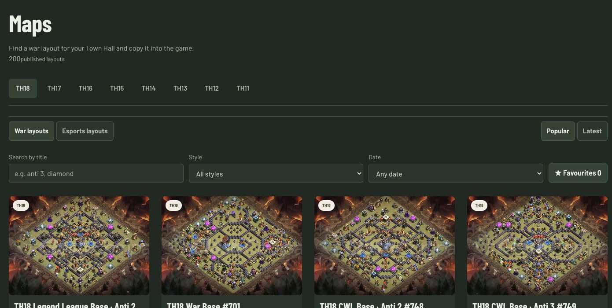
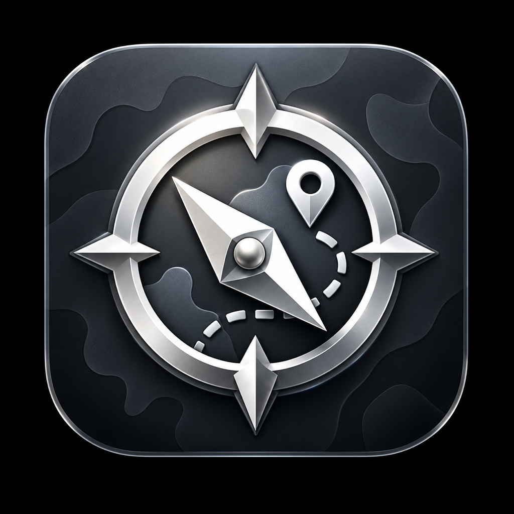
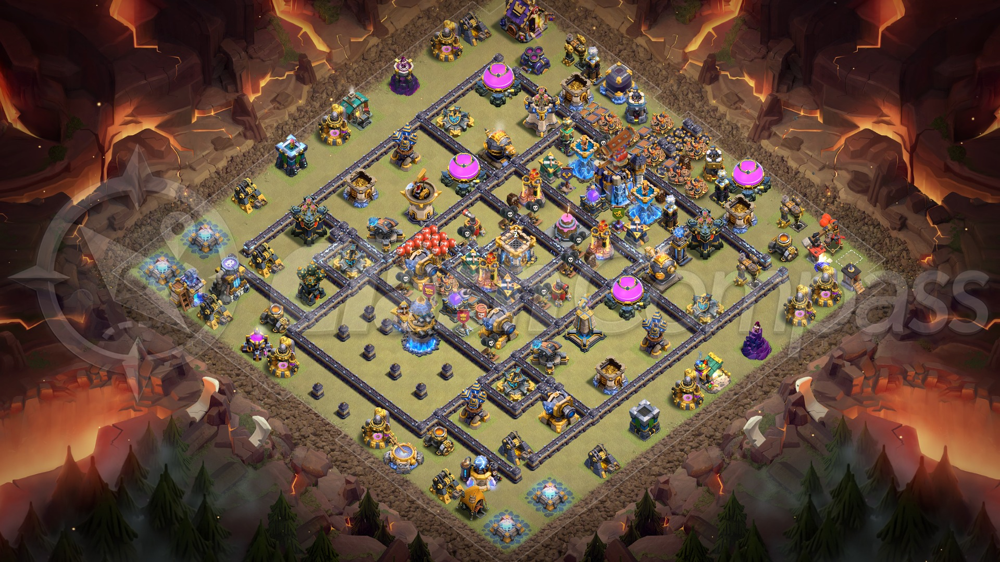
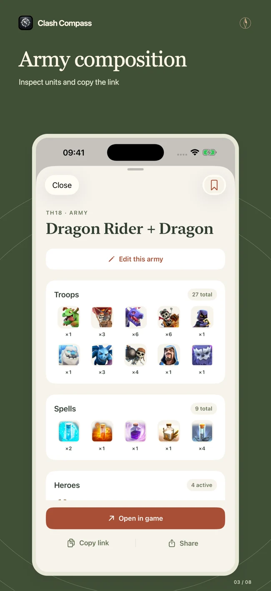
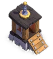

How to defend
Players arrange buildings and defenses into a base layout. A different layout can change how an attack unfolds.


Clash CompassMOBA Network / 05 Nov 2026Product & development partnership
Layouts, armies and upgrade planning for Clash of Clans.


FOR SOMEONE NEW TO CLASH OF CLANS
Players arrange buildings and defenses into a base layout. A different layout can change how an attack unfolds.

An army combines troops, spells, heroes, pets and equipment. Players need a usable composition for their Town Hall and available units.
Builders and research take time. Players choose between offensive strength, defensive upgrades and requirements for the next Town Hall.
Town Hall (TH) is the village’s main progression level. Clan wars add a schedule: heroes need to be available when players fight.
Competitive play
Built for players who plan their armies, war availability and village progression together.
Connect troop, spell and hero priorities to the selected army. Keep the laboratory, camps and Clan Castle in the same plan.
Schedule hero work before the fighting window, then continue building and defense upgrades while heroes are active.
Check pets, equipment, spells and Clan Castle contents as part of the composition.
Base layout library
TH18 competitive layouts, tracked by source publication date and game-version metadata. Inspect the full layout before opening it in the game.
ARMY PREPARATION
Review troop counts, spells, heroes, pets, equipment and Clan Castle contents.
Review troop counts, spells, heroes, pets and equipment before copying the army.
Personal upgrade planning
Queues reflect village levels, prerequisites, available builders and the chosen army.
Required buildings, merged defenses and storage capacity determine the available path. Offensive upgrades stay in the plan.
B.O.B. / Sixth builder
The sixth builder adds a permanent construction slot in the Home Village.
Clash Compass collects the remaining B.O.B. requirements in one view, so players can see the next requirement to finish.
Open the sixth builder tool ↗
DISTRIBUTION
The native app brings the layout and army libraries, saved content, village tools and spell calculations to iOS.
AUDIENCE EVIDENCE
14 October – 4 November 2026
22 completed UTC days · Cloudflare zone analytics
Select a day to inspect its value.
United States · 69.9%
180,758 HTTP requests during the reporting period.
Germany · 26,433 requests
Türkiye · 8,352 requests
United Kingdom · 8,109 requests
The workbook includes the daily series and full country breakdown.
ARMY RESEARCH
TH18: 9,666 profiles and 286,355 raw battle rows across home village, Ranked and Legend.
Collects battle JSON, checks full compositions and separates Town Hall, mode and Ranked week. It compares candidates with prior and regularized baselines.
The inspected TH18 Ranked fit uses 3,200 eligible matches from 468 players. Report status: experimental · fitted 23 October 2026.
Separate player, composition and future holdouts; calibration, ranking and confidence intervals compared with the model’s own baselines.
Product comparison
Track upgrades; schedule builders and laboratory.
Progress overview and upgrade timeline
Plan upgrade queues and completion times.
Builder and laboratory schedules
Track village and equipment; calculate ZapQuake.
Progress tracking and battle calculations
Village levels, the chosen army and upgrade priorities in the same workflow.
Also available as a native iOS app ↗COMMERCIAL DEVELOPMENT
The product is live. The next step is to measure a repeatable audience and test a sustainable operating model.
Esports layouts provide the current paid content route. The initial subscriber base gives a starting point for evaluating renewals and content demand.
Evaluate placements and editorial acquisition using page engagement, repeat visits and content usage.
PROPOSED ARRANGEMENT
Support the existing product, infrastructure and the first agreed development phase.
A continuing paid role for Ali to develop and maintain Clash Compass against an agreed roadmap.
Commercial terms to agree: compensation, ownership, IP, revenue sharing and decision rights.
REVIEW MATERIALS
The PostHog extract is shown separately in the workbook. It is not interchangeable with Cloudflare edge analytics.
The workbook separates client events from Cloudflare’s edge measurements and lists each query’s definitions.
MOBA’s 21 May 2026 company update discusses companion apps, selected web platforms, advertising and subscriptions. Clash Compass could be a small, measurable test in a further game ecosystem.
Product links, competitor documentation, source dates, analytics definitions and research limitations are collected in the source panel and workbook.